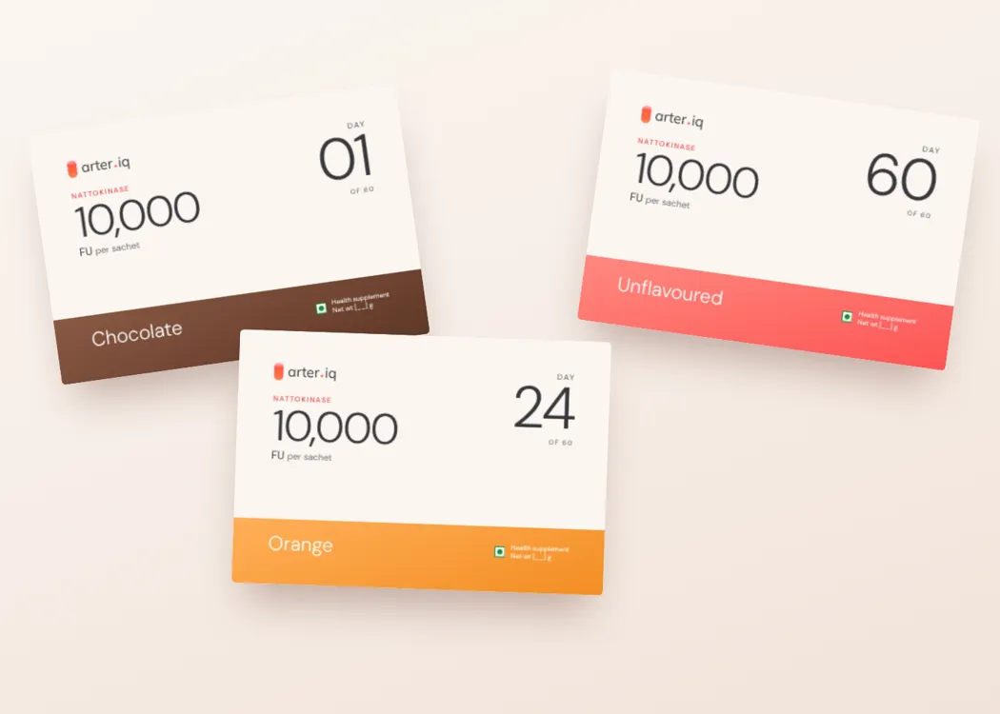
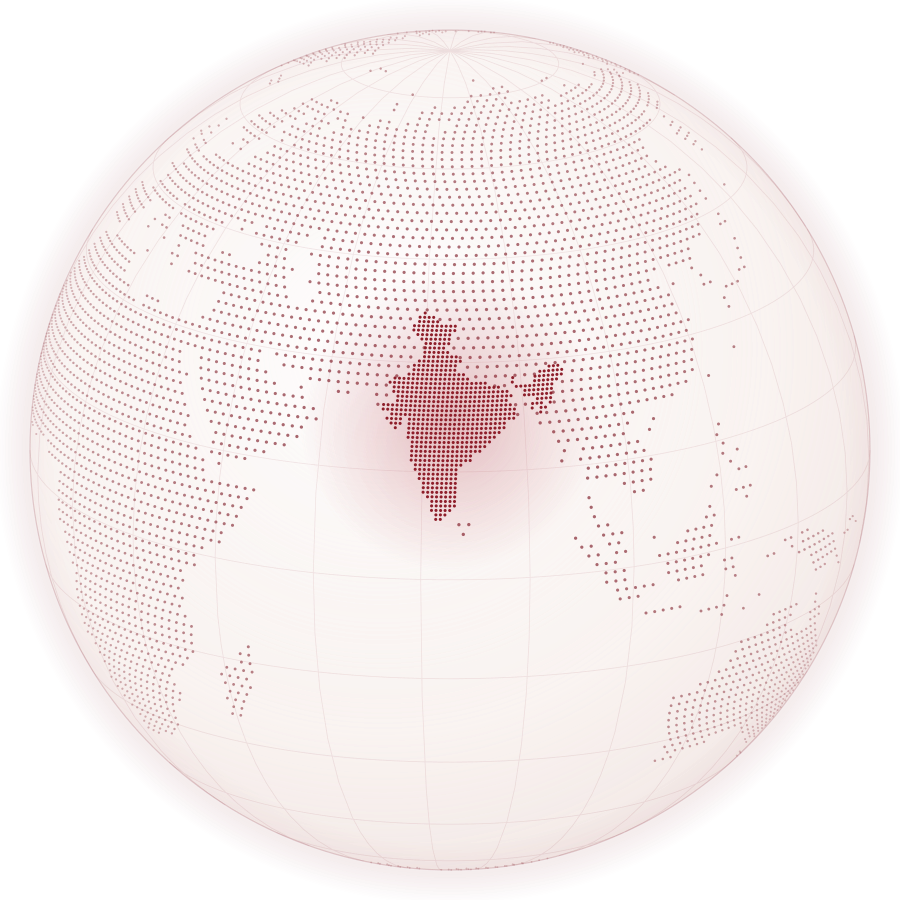
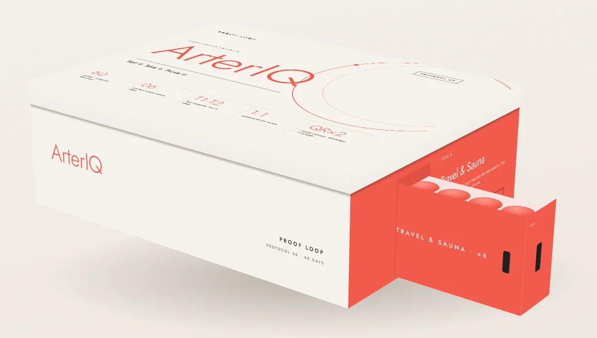

Protocol 60 · Japanese cardiovascular care
Backed by research.
Proven by your blood.
One 10,000 FU nattokinase sachet a day, with a home blood test before you begin and again at day sixty, reviewed with a specialist.
I.
10years
Why it matters
Heart trouble arrives a decade earlier in India.
Heart disease is India’s biggest killer, and it often comes without warning. Over the years blood can thicken, and the heart works harder with every beat.
Prabhakaran D et al., Circulation, 2016.
II.
The science
One enzyme from Japan, for the way blood flows.
Blood can thicken.
Age, stress and diet make blood stickier over time, so it moves less freely through your arteries.
Meet nattokinase.
A natural enzyme from natto, the fermented soybean food Japan has eaten for over a thousand years.
Smoother flow.
It helps break down fibrin, the protein that forms clots. In trials it also gave a small drop in blood pressure.

Sixty sachets, numbered by day.III.
The ritual
One sachet. Every morning.
Stir it into water and drink. Thirty seconds, every day. A numbered sachet for each morning keeps you on track.
- Dose
- 10,000 FU nattokinase
- Origin
- Japanese enzyme, made in India
- Format
- 60 sachets, numbered by day
- Free of
- Vitamin K2, by design
IV.
The proof
Don’t take our word. Take your blood test.
Most supplements ask you to trust them. We ask you to test us: the same home test, at the same lab, before your first sachet and at day sixty.
Your Day 0 and Day 60 report
Illustrative exampleIllustrative example only, not real patient data. Changes in studies were modest and results vary; some people see no change, and your report will show exactly that. A change can’t prove nattokinase alone caused it. Never stop prescribed medicine without your doctor.
Reviewed with your specialist
V.
Why we started Arter.IQ
Who looks after the heart that looks after everyone?
Since you opened this page, your heart has beaten about 0 times.
Around 100,000 times a day. It has never taken a day off.It was there for every exam, every late night, every early flight, every wedding.
In India, that heart starts carrying the load young, works some of the longest hours in the world, and too often gives way ten years early. We built Arter.IQ to give something back: Japan’s nattokinase, made in India at 10,000 FU, with two blood tests so you can see the difference.
For the hardest-working heart in your family.The founders, Arter.IQ · Made in India
VI.
Honest, always
What nattokinase is not.
Not an emergency treatment.
Never use it for a suspected heart attack, stroke or clot. In an emergency, call 112.
Not a replacement for medicine.
Never stop blood pressure, cholesterol or blood-thinning medicines because of a supplement.
Not a promise of clean arteries.
Claims about dissolving plaque or preventing heart attacks are not proven in controlled human studies.
Safety comes first.
Nattokinase can affect clotting. Speak to your doctor first if you take blood thinners such as warfarin, aspirin or clopidogrel; have a bleeding disorder; have surgery or dental work coming up; have a soy allergy; or are pregnant or breastfeeding. Every Protocol 60 begins with a safety check. Who should not take it

VII.
Begin
Protocol 60.
Your first sixty days, measured from start to finish.
- i.60 sachets, numbered by day10,000 FU
- ii.Two home blood testsDay 0 · Day 60
- iii.A one-to-one specialist reviewAfter day 60
- iv.Six travel shots and a WhatsApp conciergeEvery day
Flavour · Orange
VIII.
Questions
Straight answers.
Still unsure if it suits you? Message us on WhatsApp, or ask your doctor or pharmacist.
What is Arter.IQ?
A daily heart supplement. Each sachet holds 10,000 FU of nattokinase, a natural enzyme from natto, a fermented soybean food from Japan. You stir one into water each morning. Your first 60 days come with two home blood tests, so you can see the difference for yourself.
Do I stop after 60 days?
No. Arter.IQ is made to be taken every day, for the long run. Protocol 60 is how you begin: it measures your blood before and at day 60, then your specialist helps you decide how to continue.
Is it safe with blood thinners?
Not automatically. Nattokinase can affect clotting, so it is only for people on blood thinners with their doctor’s agreement and monitoring. Our safety check screens for this before you start.
Will it lower my cholesterol?
Controlled trials have not shown a clear drop in cholesterol, so we don’t claim it. Your two blood tests check it anyway. Never stop or replace prescribed medicine such as statins.
When will I notice anything?
You may not feel anything. In trials, blood pressure changes took about eight weeks, which is why your second test falls on days 56 to 60. Measurements matter, not feelings.
Who should not take it?
Anyone on blood thinners or antiplatelet medicines without specialist supervision; anyone with a bleeding disorder, a past brain bleed, an active ulcer, a soy allergy or very low blood pressure; during pregnancy or breastfeeding; or under 18. Stop at least 14 days before surgery or dental work.
Stop guessing.
Start measuring.
One sachet a day. Two blood tests. A specialist to talk it through.
Begin Protocol 60